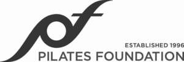
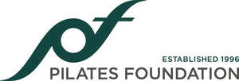

Trade Mark Journal No.2025/022 30 May 2025
UK00004202559 13 May 2025 (9,16,25,28,35,41,42)
Mark 1

Mark 2

International priority date claimed: 8 May 2025
(European Union Intellectual Property Office (EUIPO))
(019184172)
- Class 9
- Audio and video recordings; compact discs, CD ROMs; DVDs; downloadable electronic publications; downloadable electronic publications giving on-line support; instructional and teaching apparatus and instruments; computer software and programs.
- Class 16
- Printed matter; publications; books; pamphlets; leaflets; periodicals; posters; flash cards; charts; catalogues; brochures; calendars; manuals and instructional materials; all relating to certification, training, instruction, provision of facilities and equipment in the fields of exercise, physical therapy, fitness, Pilates, remedial exercise techniques and rehabilitation using the Pilates method, body conditioning and flexibility training.
- Class 25
- Clothing; footwear; headgear; sports clothing; sweatshirts; T-shirts.
- Class 28
- Exercise equipment; exercise machines; exercise platforms, personal exercise mats; gymnastic, body training and sporting articles; gymnastic, body training and sporting apparatus; body building apparatus; fitness apparatus; fitness exercise appliances; fitness exercise machines; toys and games; parts, fittings and accessories for all the aforesaid goods.
- Class 35
- Promotional services relating to instruction, training, provision of facilities and equipment, advice and consultancy for remedial exercise techniques and rehabilitation using the Pilates method; sale of pre-recorded video tapes, pre-recorded DVDs, musical sound recordings, instruction sheets, instruction cards, posters, manuals, exercise books, magazines, newsletters, exercise equipment, handles, loops, straps, and accessories for exercise equipment, exercise mats, exercise mat converters, exercise chairs, bean bags and T-shirts; sale over a global computer network of pre recorded video tapes, pre-recorded DVDs, musical sound recordings, instruction sheets, instruction cards, posters, manuals, exercise books, magazines, newsletters, exercise equipment, handles, loops, straps, and accessories for exercise equipment, exercise mats, exercise mat converters, exercise chairs, bean bags and T-shirts.
- Class 41
- Education; provision of training; education, providing of training and certification for trainers and teachers of the Pilates method; certification of education and training awards; instruction and training using the Pilates method, body conditioning, remedial exercise technique and rehabilitation; provision of facilities relating to training of Pilates exercises; advisory and consultancy services all relating to body conditioning using the Pilates technique, remedial exercise technique and rehabilitation; providing lessons, training, and facilities for exercise and physical conditioning; physical fitness instruction; Pilates instruction; physical fitness training; Pilates training; physical fitness consultation; training in the use and operation of exercise equipment; teaching in the field of physical fitness; teaching in the field of Pilates; physical education services; educational services, namely, conducting workshops and lectures in the field of exercise, physical conditioning and Pilates, and providing course materials in conjunction therewith; production of television programs; education in the nature of on-going television programs.
- Class 42
- Certification services.
Pilates Foundation
Representative: Cleveland Scott York